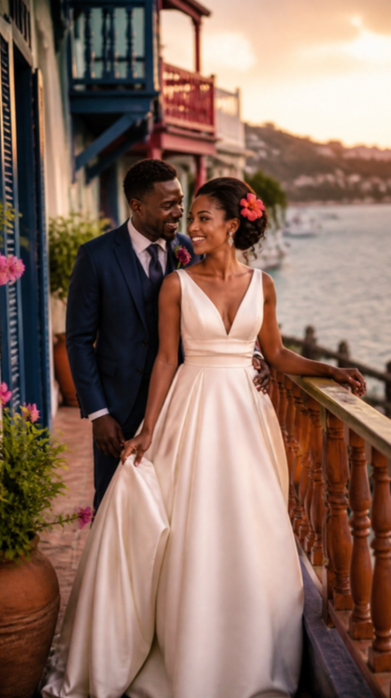
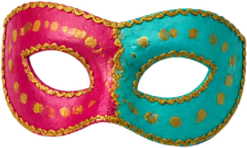
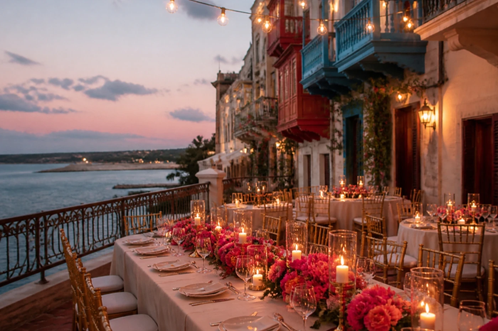
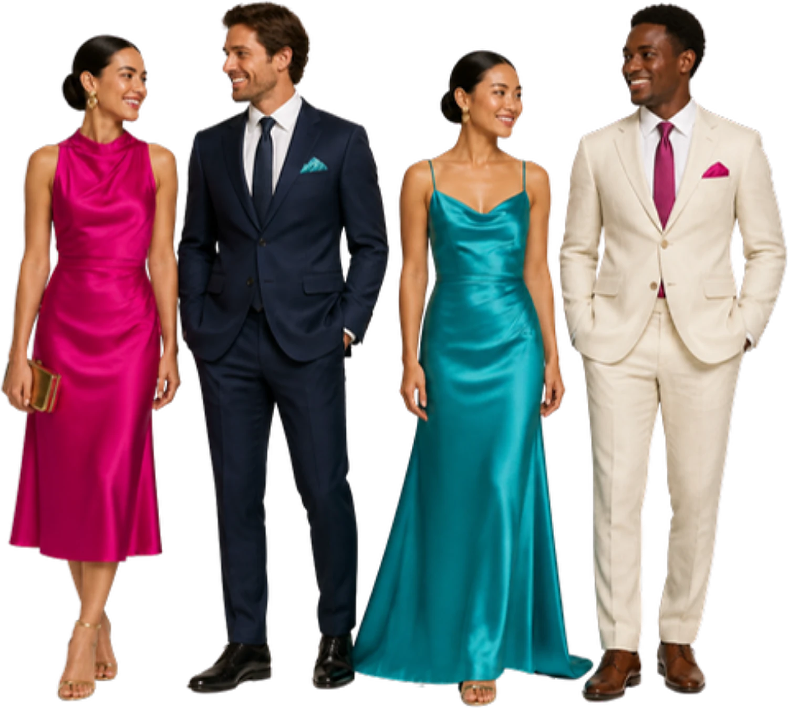
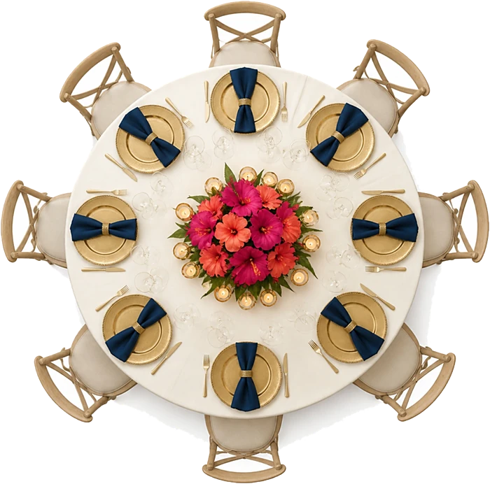

Notre histoire
Ils se sont rencontrés à Montréal, un soir de carnaval, quand Stanley a aidé Darline à recoller l'aile d'un papillon en papier mâché. Elle l'avait rapporté de Jacmel. Ils se diront oui là-bas, en février, la saison des masques et des papillons.

Le programme
Samedi 6 février 2027
- 15 h 00Cérémonie face à la baie
- 16 h 30Cocktail sur la terrasse, sous les hibiscus

18 h 00Entrée des mariés, masques et papillons- 19 h 30Dîner aux saveurs de Jacmel
- 22 h 00Ouverture du bal, au son du kompa
- 23 h 30Gâteau des mariés
Le lieu

Terrasse des Balcons
Jacmel

Hébergement
Tenue
Soirée en couleurs
Bleu nuit, fuchsia, turquoise, une touche d'or. Un loup ou un petit masque est le bienvenu au moment du bal, pour celles et ceux qui le souhaitent, sans aucune obligation.

Le compte à rebours
Votre place

Le jour venu, trouvez votre table en un instant.
Voir le plan de tableListe et cagnotte
Votre présence est notre plus beau cadeau. Pour ceux qui le souhaitent :
Participer à la cagnotte- Service à thé80 €
- Linge de maison120 €
- Week-end en amoureux250 €Déjà offert
Réservez le cadeau que vous offrez : les autres invités le voient pris. La cagnotte et les boutiques sont celles des mariés ; Maison Vivat ne touche jamais l'argent.
Votre réponse
Merci de répondre avant le 6 janvier 2027.